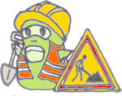

<!DOCTYPE HTML>
<html lang="fr-FR">
<head>
    <meta charset="UTF-8">
    <title>Mieux trier à Nantes</title>
    <script src="resources/datas/GarbagesDatas.js"></script>
	<script src="resources/datas/UsualCategoriesDatas.js"></script>
	<script src="resources/datas/HashGarbagesDatas.js"></script>
	<script src="resources/datas/HashFichesDatas.js"></script>
	<script src="resources/datas/HashDocsDatas.js"></script>
	<script src="resources/datas/HashStructuresDatas.js"></script>
	<script src="resources/datas/HashTrisacsDatas.js"></script>
	<script src="resources/datas/HashHomeCollectModsDatas.js"></script>
	<script src="resources/datas/HomeCollectModsDatas.js"></script>
	<script src="resources/datas/HashADomicileDatas.js"></script>
	<script src="resources/datas/HashQuizDatas.js"></script>
	<script src="resources/datas/CollectModsDatas.js"></script>
	<script src="resources/datas/CommentsDatas.js"></script>
	<script src="resources/datas/AdvicesDatas.js"></script>
	<script src="resources/datas/DocsDatas.js"></script>
	<script src="resources/datas/InfosDatas.js"></script>
	<script src="resources/datas/LabelsDatas.js"></script>
	<script src="resources/datas/QuizsDatas.js"></script>
	<script src="resources/datas/Structures1Datas.js"></script>
	<script src="resources/datas/Structures2Datas.js"></script>
     <style type="text/css">
        /**
         * Example of an initial loading indicator.
         * It is recommended to keep this as minimal as possible to provide instant feedback
         * while other resources are still being loaded for the first time
         */
        html, body {
            height: 100%;
        }
        
        #appLoadingIndicator {
            
            margin-top:8em;
            
        }

	#appLoadingIndicator > * {
            background-color: #FFFFFF;
            -webkit-animation-name: appLoadingIndicator;
            -webkit-animation-duration: 2s;
            -webkit-animation-iteration-count: infinite;
            -webkit-animation-direction: linear;
        }
        
        /**
        #appLoadingIndicator > * {
            background-color: #FFFFFF;
            float: left;
            height: 20px;
            margin-left: 11px;
            width: 20px;
            -webkit-animation-name: appLoadingIndicator;
            -webkit-border-radius: 13px;
            -webkit-animation-duration: 0.8s;
            -webkit-animation-iteration-count: infinite;
            -webkit-animation-direction: linear;
            opacity: 0.3
        }
		*/
        
        .btnAction2 {
        	background-image: url('resources/images/bouton_ecotox_petit.png');
        }
        .btnAction {
			width: 100px;
			height: 100px;
		}
    </style>
 
    <!-- The line below must be kept intact for Sencha Command to build your application -->
    <script type="text/javascript">(function(d){function l(b,d){var a=document.createElement("meta");a.setAttribute("name",b);a.setAttribute("content",d);p.appendChild(a)}var p=d.document.head||d.document.getElementsByTagName("head")[0],b=d.Ext;"undefined"==typeof b&&(d.Ext=b={});b.blink=function(d){var m=d.js||[];d=d.css||[];var a,h,c,g,n,j;navigator.userAgent.match(/IEMobile\/10\.0/)&&(a=document.createElement("style"),a.appendChild(document.createTextNode("@media screen and (orientation: portrait) {@-ms-viewport {width: 320px !important;}}@media screen and (orientation: landscape) {@-ms-viewport {width: 560px !important;}}")),
document.getElementsByTagName("head")[0].appendChild(a));l("viewport","width\x3ddevice-width, initial-scale\x3d1.0, maximum-scale\x3d1.0, minimum-scale\x3d1.0, user-scalable\x3dno");l("apple-mobile-web-app-capable","yes");l("apple-touch-fullscreen","yes");b.microloaded=!0;var k=window.Ext.filterPlatform=function(a){function c(a){var b=/Mobile(\/|\s)/.test(a);return/(iPhone|iPod)/.test(a)||!/(Silk)/.test(a)&&/(Android)/.test(a)&&(/(Android 2)/.test(a)||b)||/(BlackBerry|BB)/.test(a)&&b||/(Windows Phone)/.test(a)}
function d(a){return!c(a)&&(/iPad/.test(a)||/Android|Silk/.test(a)||/(RIM Tablet OS)/.test(a)||/MSIE 10/.test(a)&&/; Touch/.test(a))}var f=!1,e=navigator.userAgent,b,g;a=[].concat(a);b=window.location.search.substr(1).split("\x26");g={};var h;for(h=0;h<b.length;h++){var j=b[h].split("\x3d");g[j[0]]=j[1]}if(b=g.platform)return-1!=a.indexOf(b);b=0;for(g=a.length;b<g;b++){switch(a[b]){case "phone":f=c(e);break;case "tablet":f=d(e);break;case "desktop":f=!c(e)&&!d(e);break;case "ios":f=/(iPad|iPhone|iPod)/.test(e);
break;case "android":f=/(Android|Silk)/.test(e);break;case "blackberry":f=/(BlackBerry|BB)/.test(e);break;case "safari":f=/Safari/.test(e)&&!/(BlackBerry|BB)/.test(e);break;case "chrome":f=/Chrome/.test(e);break;case "ie10":f=/MSIE 10/.test(e);break;case "windows":f=/MSIE 10/.test(e)||/Trident/.test(e);break;case "tizen":f=/Tizen/.test(e);break;case "firefox":f=/Firefox/.test(e)}if(f)return!0}return!1};a=0;for(h=d.length;a<h;a++){c=d[a];"string"!=typeof c&&(g=c.platform,j=c.exclude,n=c.theme,c=c.path);
if(g){if(!k(g)||k(j))continue;b.theme||(b.theme={});b.theme.name||(b.theme.name=n||"Default")}document.write('\x3clink rel\x3d"stylesheet" href\x3d"'+c+'"\x3e')}a=0;for(h=m.length;a<h;a++)c=m[a],"string"!=typeof c&&(g=c.platform,j=c.exclude,c=c.path),(!g||k(g)&&!k(j))&&document.write('\x3cscript src\x3d"'+c+'"\x3e\x3c/script\x3e')}})(this);
Ext.blink({id:"d3ec3f29-0ff5-47ee-ba2e-19bb10dbd937",js:[{path:"cordova.js",remote:!0},{path:"app.js",update:"full"}],css:[{path:"resources/css/app.css"},{path:"resources/css/mieuxtrieranantes.css"},{path:"resources/lib/leaflet-0.7.3/leaflet.css"}]});</script>
    
	<script src="resources/lib/leaflet-0.7.3/leaflet-src.js"></script>
	<!--[if lte IE 8]>
	    <link rel="stylesheet" href="resources/css/leaflet.ie.css" />
	<![endif]-->
    <script src="resources/lib/mieuxtrieranantes/common.js"></script>
	<script src="resources/lib/mieuxtrieranantes/comments.js"></script>
	<script src="resources/lib/mieuxtrieranantes/translation.js"></script>
	<script src="resources/lib/mieuxtrieranantes/date.js"></script>
	<script src="resources/lib/mieuxtrieranantes/plageshoraires.js"></script>
    <script type="text/javascript" >
    	function load() {
    	}
    </script>
    
</head>
<body onLoad='Javascript:load()'>
	<script type="text/javascript">
	
			/* if (_isIEMobile()) {
	  			// <br/><center><div style='color:red'>Le site ne fonctionne plus avec le navigateur Internet Explorer.</div><div>Nous ne sommes pas en mesure de corriger ceci rapidement.</div><br/><div style='color:red'>Veuillez utiliser un autre navigateur (Firefox, Chrome, Safari, Chromium, Edge...)</div></center>
  				var texte = "WP";
  				alert(texte);
  			} */
  			/*if (_isIE()) {
	  			// <br/><center><div style='color:red'>Le site ne fonctionne plus avec le navigateur Internet Explorer.</div><div>Nous ne sommes pas en mesure de corriger ceci rapidement.</div><br/><div style='color:red'>Veuillez utiliser un autre navigateur (Firefox, Chrome, Safari, Chromium, Edge...)</div></center>
  				var texte = "Le site fonctionne mal avec le navigateur Internet Explorer (boutons page d'accueil...). Veuillez utiliser un autre navigateur (Firefox, Chrome, Safari, Opera, Chromium, Edge...)";
  				alert(texte);
  			}*/
			var texte = "<div id='appLoadingIndicator'><center><br/>Par des b&eacute;n&eacute;voles<br/>www.mieuxtrieranantes.fr<br/>Version 1.16 (association)<br/><i>Nouveaut&eacute;s : fin bascule en anglais sur clic sur drapeau, ajout 150 composteurs collectifs Compostri sur la carte</i></center></div>";
			document.write(texte);
	</script>
</body>
</html>
